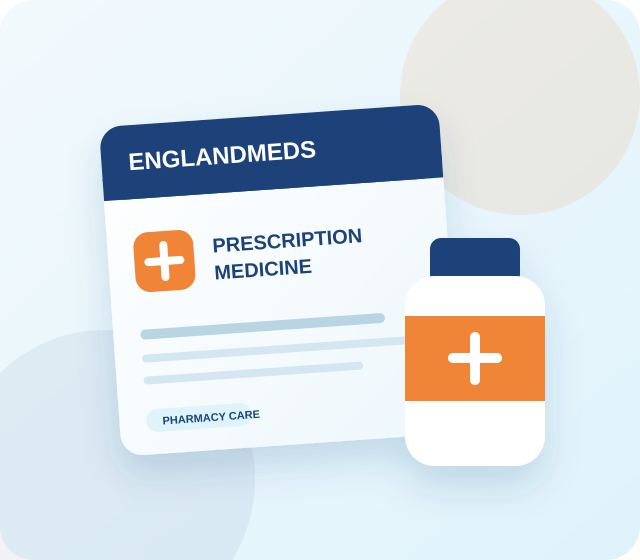

MEDICINE CATEGORY
Sleep and Insomnia Medicines
Persistent insomnia can affect concentration, mood and physical health. Prescription sleep medicines are generally considered only after the cause and safer first-line options have been reviewed.
WHY NORTHWESTMEDS
Clear information and a responsible request process
NorthwestMeds organises medicine information, pack choices and request steps in one place. Prescription sleep treatments remain subject to clinical suitability and verification.
- Product and pack information displayed clearly
- Prescription and eligibility checks before fulfilment
- Private support through WhatsApp or Telegram
- Discreet tracked delivery options across the UK
GOOD TO KNOW
Frequently asked questions
General information cannot replace advice from your prescriber or pharmacist.
What are sleep medicines used for?
They may be prescribed for short-term severe insomnia when a clinician decides the expected benefits outweigh the risks.
Can sleep medicines be taken every night?
Many prescription sleeping medicines are recommended only for short courses because tolerance and dependence can develop.
Can sleep medicines cause next-day drowsiness?
Yes. Do not drive or operate machinery if you remain sleepy, dizzy or unable to concentrate.